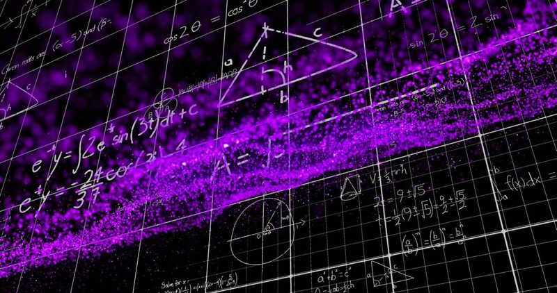
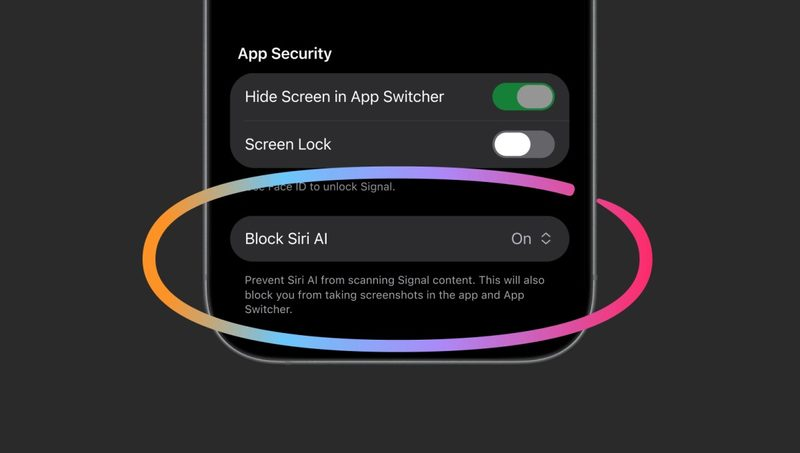
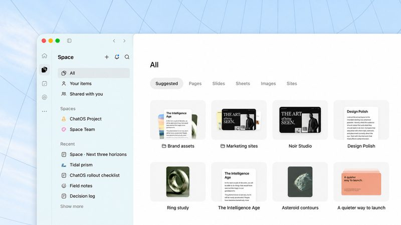
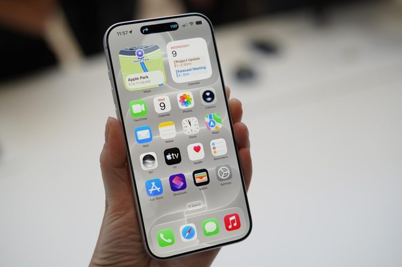
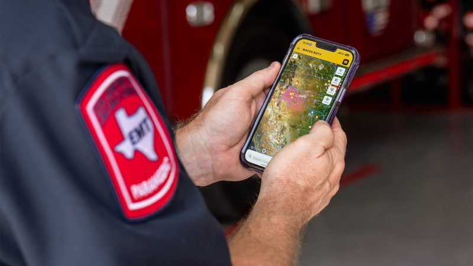

今日頭條
數學家稱借 Claude 證明黎曼猜想
PLUS：Signal 預設擋截圖，防 AI 讀聊天
本期重點：Anthropic 數學家 Levent Alpöge 11 月 20 日宣布與 Claude 合作證明黎曼猜想，獨立檢查初步過關但仍待最終確認；Signal 開始在手機上預設擋截圖，避免系統內建 AI 讀到聊天內容。另有 ChatGPT Space 開放 Plus 用戶、Google 搜尋與 Gemini 新增買菜與報稅等連結應用、Apple 徵才打造自家 AI 代理、川普揚言對海外建資料中心課重稅，以及 Gemini 協助野火通報 App 加快示警。

圖：Scientific American研究#1Anthropic 數學家稱與 Claude 合作證明黎曼猜想
Anthropic 員工、數學家 Levent Alpöge 於 11 月 20 日（美國時間）在個人網站宣布，他與 Claude 合作找到黎曼猜想的證明，並稱方法可延伸到廣義黎曼猜想。黎曼猜想 1859 年提出，是克雷數學研究所 100 萬美元獎金的千禧年難題之一。證明以 Lean 程式語言寫成，MIT 數學家 Andrew Sutherland 表示已獨立編譯並通過 Lean 核心檢查。
💡 跟你有什麼關係：如果最終確認成立，這會是 AI 協助解決頂尖數學難題的指標案例，也代表 AI 在研究工作中的角色正從輔助查資料，走向參與核心推理。
⚠️ Alpöge 原始聲明放在個人網站，本則引用 Scientific American 報導。截至報導時，檢查定理敘述是否被偷換的「comparator」程序仍在進行；Anthropic 未對此發表評論；克雷研究所規定解答須發表並經至少兩年檢驗才可能獲獎。
📰 原始來源：Scientific American（2026-11-20） ↗
圖：Signal（經 The Verge）新聞#2Signal 預設擋截圖，防手機內建 AI 讀聊天
Signal 總裁 Meredith Whittaker 於 11 月 20 日發文表示，Signal 會在 iOS 27 預設封鎖 App 內截圖，在 Android 偵測到 AI 助理讀取畫面時也會阻擋，以免 Siri AI、Gemini 等系統內建 AI 代理擷取聊天內容。iPhone 上的新設定名為「Block Siri AI」，預設開啟，使用者可自行關閉。
💡 跟你有什麼關係：手機 AI 助理越來越常「看螢幕」幫你回答問題，代表你和朋友的私訊也可能被送到 AI 處理；這項設定讓聊天內容預設不被擷取。
⚠️ Signal 自己承認保護不完整：對方若關閉保護，對方手機上的 AI 仍可能讀到內容；也擋不住透過通知或檔案系統讀取資料，Mac 版目前無法提供這項保護。Signal 呼籲 Apple、Google、Microsoft 提供開發者阻擋 AI 存取的正式工具。
📰 原始來源：Signal 官方部落格（2026-11-20） ↗
圖：OpenAI（經 Engadget）新上線#3ChatGPT Space 開放 Plus 用戶，可多人共編頁面
OpenAI 於 11 月 20 日在 ChatGPT 更新紀錄宣布，Space 功能開始向全球 18 歲以上的 Plus 用戶推出。使用者可以和 ChatGPT 一起做互動頁面與簡報，邀請其他人共同編輯，也能讓頁面依連結的應用程式自動更新。Space 取代原本側欄的 Library，網頁版、桌面版與 iOS、Android 都能用。
💡 跟你有什麼關係：每月 20 美元的 Plus 用戶也能把行程表、讀書筆記或專案計畫放在同一個頁面和家人同事一起改，不必再複製貼上對話內容。
⚠️ 開啟分享的頁面需要 Plus、Pro、Business 或 Enterprise 帳號，免費版用戶看不到，也沒有公開連結；功能分批推出，不一定所有人同時看到。
📰 原始來源：OpenAI 說明中心（2026-11-20） ↗圖：Google新上線#4Google 搜尋與 Gemini 新增買菜、報稅等連結應用
Google 於 11 月 20 日宣布，在美國透過搜尋與 Gemini App 推出新的 Connected Apps，包括 Albertsons、Safeway、Shaw's 與 Target，可以幫你建立購物清單並結帳。信用機構 Experian 也擴及搜尋，可查信用評分、比較個人貸款；H&R Block 則能在搜尋裡試算稅額與退稅。
💡 跟你有什麼關係：AI 正從「回答問題」走向「幫你下單、辦事」，未來在搜尋框裡就可能完成買菜或比價貸款，但也代表要授權帳號給 AI 使用。
⚠️ 目前僅限美國用戶；Angi 與 Thumbtack 的帳號連結官方說會在數週後推出。綁定購物或金融帳號前，建議先確認授權範圍。
📰 原始來源：Google 官方部落格（2026-11-20） ↗
圖：The Verge／Allison Johnson新聞#5Apple 徵才打造自家 AI 代理，可跨 App 操作
Bloomberg 於 11 月 19 日（美國時間）報導，Apple 一則徵才啟事顯示正在找工程主管，帶領開發能瀏覽網頁、跨 App 操作、寫程式與呼叫服務的 AI 代理。職缺內容提到，這些代理能規劃並執行跨 App、瀏覽器、命令列與 API 的多步驟任務，並與 Siri、UI Frameworks 和 Apple Foundation Models 團隊合作。
💡 跟你有什麼關係：Meta、OpenAI、Google 都已推出能代你操作電腦的 AI，Apple 若跟進，iPhone 與 Mac 用戶未來可能直接在系統裡使用類似功能。
⚠️ 這是根據已下架的徵才啟事所做的報導，Apple 未正式宣布產品或時程；本則引用 The Verge 對 Bloomberg 報導的整理。
📰 原始來源：The Verge 引 Bloomberg（2026-11-19） ↗圖：The Verge／Cath Virginia政策#6川普揚言對海外建 AI 資料中心的公司課重稅
美國總統川普 11 月 20 日在記者會上表示，不會允許美國公司在海外蓋資料中心，若這麼做將課「巨額稅」。他也說自己還沒跟幕僚提過這個想法，並未說明具體做法。
💡 跟你有什麼關係：台灣是 AI 伺服器與晶片供應鏈重鎮，美國若限制企業在海外建資料中心，可能影響全球資料中心布局與相關訂單走向。
⚠️ 目前只是口頭表態，沒有具體法案或時程；報導指出新一屆國會將由民主黨占多數，能否落實仍不確定。本則引用 The Verge 報導。
📰 原始來源：The Verge（2026-11-20） ↗
圖：Google觀點#7Gemini 幫野火 App 把無線電轉文字，30 秒內抓到通報
Google 於 11 月 20 日分享，Google.org 工程師團隊花 6 個月協助野火警報 App Watch Duty，用超過 2 萬小時的消防無線電錄音，打造以 Gemini 為基礎的轉文字工具。這套工具把雜訊嚴重的無線電字錯率從 38% 降到 22.34%，每天轉寫約 400 個頻道、超過 200 小時語音，新火警能在 30 秒內被標出。
💡 跟你有什麼關係：這是 AI 用在防災的實際案例：搶到幾分鐘示警時間，就可能讓居民在半夜提早撤離。
⚠️ 數字為 Google 官方說法；Watch Duty 主要服務美國，台灣目前沒有這項服務。
📰 原始來源：Google 官方部落格（2026-11-20） ↗✅ 2026/11/21（六） 可以做：如果你用 Signal，更新 App 後可以到隱私或安全設定確認截圖保護（iPhone 為「Block Siri AI」，Android 為「Screen security」）是否開啟；關掉會讓聊天內容可能被手機內建 AI 讀取。
🗂️ 過去 14 天